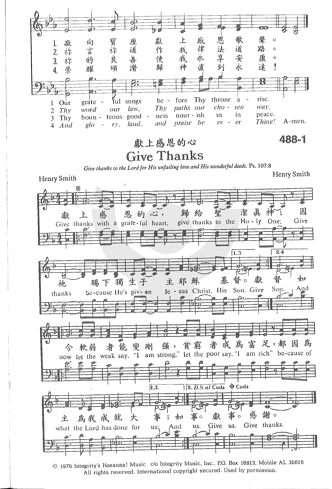

0281 天父我神 God of The Ages, Whose Almighty Hand NATIONAL HYMN
|
|
37. 先聖之神，你用全能聖手，
(God of our fathers, whose Almighty Hand) |
| 1 God of the ages, whose
almighty hand
leads forth in beauty all the starry band
of shining worlds in splendor through the skies,
our grateful songs before thy throne arise.
2 Thy love divine hath led us in the past;
in this free land with thee our lot is cast;
be thou our ruler, guardian, guide, and stay,
thy Word our law, thy paths our chosen way.
3 From war's alarms, from deadly pestilence,
be thy strong arm our ever sure defense;
thy true religion in our hearts increase;
thy bounteous goodness nourish us in peace.
4 Refresh thy people on their toilsome way;
lead us from night to never-ending day;
fill all our lives with love and grace divine,
and glory, laud, and praise be ever thine.
United Methodist Hymnal, 1989
|
先聖之神，你用全能聖手，
造出星群，鋪張美麗宇宙；
榮耀光芒在太空中輝映，
敬向寶座，獻上感恩歌聲。
天父慈愛，昔曾引導看顧，
賜給我們自由美麗樂土；
願我聖父統領扶助保護，
你言，你道，是我律法，道路。
脫離戰禍，脫離病毒災殃，
藉你聖臂永作我們保障；
你的真道在我們心滋長，
你的善良，使我們得安康。
求主甦醒艱辛途中百姓，
離開黑夜，導人永遠光明；
使我生活充滿恩典，慈愛，
榮耀，頌讚，歸主直到萬代。
|


http://sooopu.com/html/301/301603.html
第5首 -天父我神_钢琴谱_搜谱网 (sooopu.com)
 |
| |
|
http://www.xueshengshi.com/?p=4885
简介（一） （来源：《岁首到年终》）
天父我神
God of Our Fathers
Daniel C. Roberts, 1841-1907
凡称为我名下的人，是我为自己的荣耀创造的， 是我所作成，所造作的。（赛 43:7）
神对于万有的关系有三种：一是创造万有，二是保守万有，三是治理万有。为何神要创造万有，根据圣经，至少有四个目的：
创造是启示祂的权能（罗 11:33-36）；
创造是表示祂的智能（弗 3:9-10）；
创造是揭示祂的旨意（启 4:11）；
创造是显示祂的荣耀（赛 43:7）。
神创造之后，对于万有，并非袖手旁观，任其自生自灭，及时时看顾与保守。例如，造人之后，在古时时常拯救祂的百姓，到了日期满足，就差遣基督降世。神在自然界中保守五谷，生之长之，出日吹风下雨。宇宙运行按其秩序规律，都足见神的保守（尼
9:6）。
保守是消极工作，统治是积极的工作。圣经中多处经文说到神掌管万有。对于自然界、物理现象、动植物、人生及万国，无不施其「总裁」之权，执行其统治之工（参：诗
102:19，伯 37 至 41 章，加 1:15，太 10:29，诗 22:28 等）。
神，超乎万有之中，也住在万有之内，愿荣耀，威严，能力，权柄都归于祂！
这首「天父我神」自1876年问世以来，逐渐被更多人喜爱，今天大部份圣诗集都包括该诗。作者系美国圣公会牧师 Daniel C.
Robert。
本诗原是为纪念美国独立一百周年之庆而作，第一次是在该年七月四日献唱，为表扬其成就，在其离世之前，Norwich 大学颁赠予神学博士学位，并获各界的褒奖。
这首诗表达了天父对这个「以基督立国」之美国的引导、保守，并需要倚靠祂来面对将来的挑战。当然，它也适用于任何人、任何国家。
1 天父我神，用大全能圣手，照祢美旨铺张美丽宇宙；
荣耀光芒在太空中辉映，敬向宝座献上感恩歌声。
2 眞神慈爱，自古引导眷顾，又赐我们自由美丽乐土；
愿我圣父统领扶助保护，祢言祢道作我律法道路。
3 愿主膀臂，作我护卫保障，使我免遭战争灾祸死亡；
愿你圣道在我心中增长，祢的良善使我永享安康。
4 前路艰难，求主苏醒我灵，经过黑夜进入永远光明；
愿我生命满有爱与恩典，荣耀颂赞归神直到永远！
＊只要一心兴神同行，那么顺服遵命就一点也不难了！ ── 约翰达
【天父我神激發教會】 (christianstudy.com)
【天父我神激發教會】
詩集：世紀頌讚，471
天父我神激發教會，在她生命中運行；懇切祈求，在我心田栽種宣教關切心。
助我從新委身事奉，莫負上主託重任，向我宗族分解真理，罪得釋放有永生。
保守教會如火挑旺，活潑見證主權能；聖靈同行，宣講真道，到各處拯救靈魂。
城內城外，隨時隨地，無論環境富或貧，神愛世人不分階層，主差遣傳揚福音。
求主賜我社會醒覺，濟世胸懷心慈仁，世上眾人皆主所造，主心中看為寶貴。
增添愛心關懷別人，惻隱之心樂施贈，身體靈魂都得拯救，福音關顧遍全人。
天父我神發出挑戰，要趕快完成責任；教會遵行基督吩咐，將福音傳遍萬民。
對準目標，清楚方向，應主呼召甘獻身，齊來儆醒預備迎見基督君王快來臨。
https://hymnary.org/text/god_of_our_fathers_whose_almighty_hand
Notes
Scripture References:
st. 3 = Ps. 46:1
Daniel C. Roberts (b.
Bridgehampton, Long Island, NY, 1841; d. Concord, NH, 1907) wrote this
patriotic hymn in 1876 for July 4 centennial celebrations in Brandon,
Vermont, where he was rector at St. Thomas Episcopal Church. Originally
entitled "God of Our Fathers," this text was later chosen as the theme hymn
for the centennial celebration of the adoption of the United States
Constitution. It was published in the Protestant Episcopal Hymnal of
1892.

Educated at Kenyon
College, Gambier, Ohio, Roberts served in the union army during the Civil
War. He was ordained in the Episcopal Church as a priest in 1866 and
ministered to several congregations in Vermont and Massachusetts. In 1878 he
began a ministry at St. Paul Church in Concord, New Hampshire, that lasted
for twenty-three years. For many years president of the New Hampshire State
Historical Society, Roberts once wrote, "I remain a country parson, known
only within my small world," but his hymn "God of Our Fathers" brought him
widespread recognition.
Unlike many other
nationalist hymns, this text keeps our focus on God. This is a Go who
created the universe, who leads and governs his people, who serves as our
protector, and who refreshes his people with divine love. Presumably the
text referred originally to white Anglo-Saxons, but in its present form it
is fitting for all citizens and residents of any country. Christians too may
sing this anthem, using it to recognize the national association we have on
earth but remembering that the practice of "true religion" (st. 3)
transcends earthly loyalties and promotes citizenship in the kingdom of
heaven.
Liturgical Use:
Worship that focuses on God's reign over the nations; civic celebrations.
--Psalter Hymnal
Handbook, 1987
Many American patriotic hymns extol the beauty and worth of the United States
first, and treat God almost as an afterthought, which makes it difficult for
some Christians to be comfortable singing them in the context of a worship
service. This hymn puts God first, and is constantly addressed to Him as a
prayer for the nation, without reference to American superiority. The second and
third stanzas allude to a nation's need for God's law and guidance to maintain
peace.
Text:
The year 1876 was the centennial of the United States’ Declaration of
Independence, which was the occasion for which this text was written. Daniel C.
Roberts, an Episcopalian rector in Vermont, was the author. It was first sung in
St. Thomas Episcopal Church in Brandon, Vermont, to the tune RUSSIAN HYMN.
Roberts submitted his text to the revision of the hymnal of the Protestant
Episcopal Church in 1892, where it was first published.
This hymn has four stanzas. The only notable alteration made to this text is
that sometimes the opening line is changed from “God of Our Fathers” to “God of
the Ages” for gender inclusivity.
Tune:
NATIONAL HYMN, the tune to which this text is sung, was written by George W.
Warren in 1892. It was first published in Arthur H. Messiter's The Hymnal
Revised and Enlarged in 1893. One popular feature of this tune is the trumpet
fanfares at the beginning of each short phrase. In the original publication of
this tune, the first phrase was indicated “Voices alone,” with the organ joining
after the second fanfare. This hymn should be sung in harmony at a moderately
slow tempo, with full accompaniment.

When/Why/How:
This hymn is usually treated as an American patriotic hymn, which it was
originally intended to be. In this use, it is sometimes combined with other
patriotic hymns, such as in “Patriot’s Medley” for brass sextet, which combines
“God of the Ages,” “America the Beautiful,” and “Battle Hymn of the Republic.”
However, this text is not inherently American, so it can also be used by any
nation as a prayer for God’s guidance. “God of All Ages, Whose Almighty Hand” is
a choral setting in which the standard opening fanfare is expanded to include
the choir and is repeated at the end. Brass and percussion are optional, but
with this hymn, the trumpets are expected on the fanfares. This setting is also
included in the global prayer service “Prayers for the Nations.” A simpler way
to augment this grand hymn tune is with a brass quartet setting of “NATIONAL
HYMN” that is designed to complement the standard hymnal setting for
congregational singing.
Tiffany Shomsky,
Hymnary.org
"God of Our Fathers" is a 19th-century American Christian hymn,
written in 1876 to commemorate the 100th anniversary of the United
States Declaration of Independence.[1]
The hymn was written by Daniel C. Roberts,[2] a
priest in the Protestant
Episcopal Church serving, at the time, as rector of St. Thomas & Grace
Episcopal churches in Brandon,
Vermont. Roberts had served in the American
Civil War in the 84th
Ohio Infantry.
In 1892, Roberts sent the hymn anonymously to the General Convention of the
Episcopal Church to be considered by a group tasked with revising the Episcopal
hymnal. If the group accepted his hymn, Roberts said he would send them his
name. The commission approved it. The hymnal editor and organist George W.
Warren were to choose a hymn for the celebration of the Centennial of the United
States Constitution. They chose Roberts' lyrics, which were originally sung
to a tune called "Russian Hymn." Warren wrote a new tune called "National Hymn."[2]
https://www.umcdiscipleship.org/resources/history-of-hymns-god-of-the-ages
History of Hymns: "God of the Ages"
"God of the Ages"
Daniel C. Roberts
The UM Hymnal, No. 698
Daniel C. Roberts
God of the ages whose almighty hand
Leads forth in beauty all the starry band
Of shining worlds in splendor through the skies,
Our grateful songs before thy throne arise.
“God of the Ages” (originally “God of Our Fathers”), its author’s one claim to
literary fame, was written for a small rural parish in Brandon, Vt., for the
nation’s centennial celebration in 1876.
Daniel Crane Roberts (1841-1907) was a New Englander who served as a private in
the 84th Ohio Volunteers during the Civil War. Following the war, Roberts was
ordained a deacon and then a priest in the Episcopal Church. His parishes were
in Vermont and Massachusetts, and Concord, N.H., where he served St. Paul’s
Church for 29 years.
He was also widely known throughout New Hampshire for his work as president of
the New Hampshire Historical Society, as chaplain of the Grand Army of the
Republic and as an active member in the Knights Templar.
The 1892 edition of the hymnal of the Protestant Episcopal Church first included
the text. Roberts’ hymn was originally written to the tune RUSSIAN HYMN (See The
UM Hymnal, No. 653).
George Warren (1828-1902), organist of the St. Thomas Episcopal Church in New
York City, was commissioned in 1894 to write a new tune. NATIONAL HYMN was the
result. Hymnologist Albert Bailey says of this tune: “It is this music with its
melodramatic trumpet calls that helped bring the hymn to public attention.”
The 1894 official hymnal of the Episcopal Church used the tune NATIONAL HYMN
with this text and this has been the exclusive pairing ever since. The text with
NATIONAL HYMN entered American Methodist hymnals in 1905.
Stanza one—
a sweeping one-sentence stanza—places the “God of Our Fathers” in a cosmic
perspective “lead[ing] forth in beauty all the starry band of shining worlds.”
The “starry band” (presumably our nation) in turn offers “grateful songs before
[God’s] throne.” These “Fathers” (in the original) might be seen as Moses-like
figures guiding the nation.
In stanza two,
the author bears witness that this nation has been divinely “led in the past.”
God has led “this free land” and therefore “with thee our lot is cast.” God is
our divine “ruler, guardian, guide, and stay” and God’s “Word is our law.”
In stanza three
we sing that God’s strong arm has protected us “From war’s alarms” and “deadly
pestilence.” Earlier stanzas offer glimmers that our country has been chosen by
God.
Through war and pestilence, “God’s strong arm [is] our ever sure defense.” The
author prayers that God’s “true religion in our hearts” will result in
“bounteous goodness” and “peace.”
In stanza four,
like the children of Israel wandering through the desert, we are “people on
their toilsome way.” The author offers a petition that we would be led “from
night to neverending day.” All “glory, laud, and praise” is God’s.
This hymn’s stirring lyrics and majestic tune represent, albeit subtly, the
common 19th-century assumption of Manifest Destiny: God will lead us from the
war and pestilence of our earlier captivity to the freedom and light of peace.
In his Companion to The UM Hymnal Carlton Young notes several changes made in
the original text as the Hymnal Revision Committee, following its own
guidelines, “attempted to reduce where possible the predominance of masculine
pronouns and images.”
In 1901, Roberts modestly wrote, “I remain a country parson, known only within
my own small world.” In reference to his one significant literary work, he
noted, “My little hymn has thus had a very flattering official recognition. But
that which would really gladden my heart, popular recognition, it has not
received.” Before his death in 1907 he was awarded several honors including the
Doctor of Divinity by Norwich University.
Dr. Hawn is professor of sacred music at Perkins School of Theology.
https://en.wikipedia.org/wiki/God_of_Our_Fathers
From Wikipedia, the free encyclopedia
|
God of Our Fathers |
|
Genre |
Hymn |
|
Written |
1876 |
|
Based on |
Psalm 46:1 |
|
Meter |
10.10.10.10 |
|
Melody |
"National Hymn" by George William Warren |
| |
|
|
"God of Our Fathers" is a
19th-century American Christian hymn,
written in 1876 to commemorate the 100th anniversary of the United
States Declaration of Independence.[1]
The hymn was written by Daniel C. Roberts,[2] a
priest in the Protestant
Episcopal Church serving, at the time, as rector of St. Thomas & Grace
Episcopal churches in Brandon,
Vermont. Roberts had served in the American
Civil War in the 84th
Ohio Infantry.
In 1892, Roberts sent the hymn anonymously
to the General Convention of the Episcopal Church to be considered by a
group tasked with revising the Episcopal hymnal. If the group accepted his
hymn, Roberts said he would send them his name. The commission approved
it. The hymnal editor and organist George W. Warren were to choose a hymn
for the celebration of the Centennial of the United
States Constitution. They chose Roberts' lyrics, which were originally
sung to a tune called "Russian Hymn." Warren wrote a new tune called
"National Hymn."[2]
https://songsandhymns.org/hymns/detail/god-of-our-fathers
God of Our Fathers Devotional
Lyricist: Daniel C. Roberts
Lyrics Date: 1876
Key: E flat
Theme: The Nation
Composer: George W. Warren
Music Date: 1892
Tune Title: NATIONAL HYMN
Meter: 10.10.10.10.
Scripture: Psalm 46:7
Devotional:
Many hymns have been written to celebrate great events in the life of Christ.
But today’s hymn is only one of a few that have been written for patriotic
causes. The occasion for the writing of God of our Fathers was the centennial of
the Declaration of Independence in 1876. Many other hymns were written for this
event, but only this one has survived.
Today, when it seems that to be "in" one is expected to rule patriotism "out",
it is necessary to recall the emphasis of Scripture regarding a Christian’s duty
to country. "Give to Caesar what is Caesar’s and to God what is God’s" commanded
the perfect Patriot in Mark 12: 17. And one Christ’s chief disciples wrote,
"Submit yourself for the Lord’s sake to every authority instituted among men:
whether to the King, as the supreme authority, or to governors who are sent by
him. (1 Peter 2:13)
And the Apostle Paul echoed the same conviction: "Everyone must submit himself
to the governing authorities." (Romans 13:1). This was at a time when the Roman
authorities were hardly examples of God-fearing virtue.
To be sure, governments are not infallible and there is room for constructive,
honest criticism. But when we critique our country, let us remember that the
following is important:
Pray for America—our hymn is such a prayer
Pay our taxes—not a happy task, but it is biblical: see Romans 13:7.
Serve—have you prayed recently for our military men and women?
Vote—sadly, only about 50% of those eligible, vote in a USA presidential
election. And the percentage is lower for all other elections. Of even more
concern is that Bible-believing Christians do no better than the general
population when it comes to voting!
Some folks insist that America was founded as a Christian nation, but history
does not bear this out. But, even if it were true, being born in a Christian
nation does not make one a Christian any more than being born in a garage makes
one a Chevrolet—or being born in a hospital makes one a doctor! A nation is only
Christian when its citizens love and serve Jesus Christ. Therefore, when we pray
for our country, let us first pray for the conversion of her citizens.
See Less
Hymn Story:
Daniel C. Roberts, the 35 year-old rector of St. Thomas Episcopal Church, a
small rural church in Brandon, Vermont, wanted a new hymn for his congregation
to celebrate the American Centennial in 1876. He wrote "God of Our Fathers" and
his congregation sang it to the tune RUSSIAN HYMN.
In 1892, he anonymously sent the hymn to the General Convention for
consideration by the commission formed to revise the Episcopal hymnal. If
approved, he promised to send his name. The commission approved it, printing it
anonymously in its report. Rev. Dr. Tucker, who was the editor of the Hymnal,
and George W. Warren, an organist in New York city, were commissioned to choose
a hymn for the celebration of the centennial of the United States Constitution.
They chose this text and Warren wrote a new tune for it, NATIONAL HYMN,
including the trumpet fanfare at the beginning of the hymn.
It was first published in Tucker’s Hymnal, 1892, with this tune, then in 1894 in
the Tucker and Rosseau’s Hymnal Revised and Enlarged. These lyrics were also set
to the hymn tune PRO PATRIA in Charles Hutchins’ The Church Hymnal. But NATIONAL
HYMN prevailed and it is the tune to which "God of Our Fathers" is always sung
today.